HOME
HOME
 BACK
BACK
"EVOLUTION OF COMPUTER (FROM 2700-2300 BC TILL NOW)"
EXISTENCE OF COMPUTER
The Antikythera mechanism is believed to be the earliest known mechanical analog computer. It was designed to
calculate astronomical positions. It was discovered in 1901 in the Antikythera wreck off the Greek island of
Antikythera, between Kythera and Crete, and has been dated to c. 100 BCE. Technological artifacts of similar
complexity did not reappear until the 14th century, when mechanical astronomical clocks appeared in Europe
The history of computer science began long before the modern discipline of computer science that emerged in the
20th century, and was hinted at in the centuries prior. The progression, from mechanical inventions and
mathematical theories towards modern computer concepts and machines, led to a major academic field and the basis
of a massive worldwide industry
The earliest known tool for use in computation was the abacus, developed in the period between 2700�2300 BCE in
Sumer. The Sumerians' abacus consisted of a table of successive columns which delimited the successive orders of
magnitude of their sexagesimal number system.Its original style of usage was by lines drawn in sand with pebbles
. Abaci of a more modern design are still used as calculation tools today.
 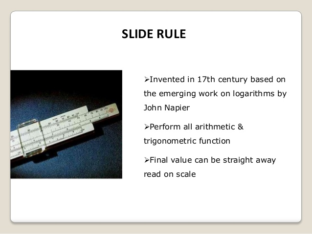
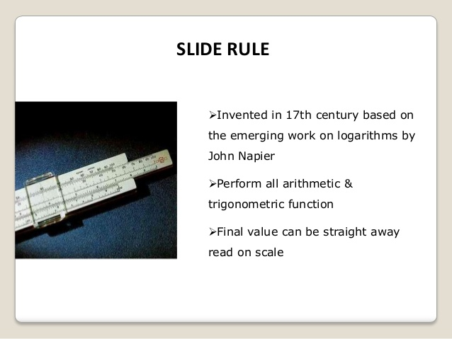
In 1837 Charles Babbage first described his Analytical Engine which is accepted as the first design for a modern
computer. The analytical engine had expandable memory, an arithmetic unit, and logic processing capabilities able to
interpret a programming language with loops and conditional branching. Although never built, the design has been
studied extensively and is understood to be Turing equivalent. The analytical engine would have had a memory
capacity of less than 1 kilobyte of memory and a clock speed of less than 10 Hertz
 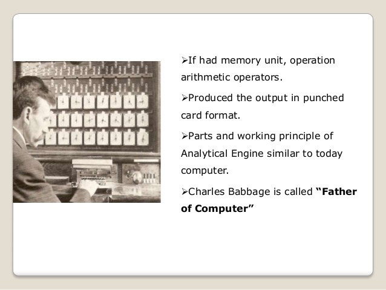
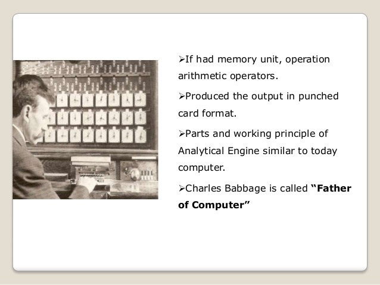

Considerable advancement in mathematics and electronics theory was required before the first modern computers could
be designed.
BINARY LOGIC
In 1702, Gottfried Wilhelm Leibniz developed logic in a formal, mathematical sense with his writings on the binary
numeral system. In his system, the ones and zeros also represent true and false values or on and off states. But it
took more than a century before George Boole published his Boolean algebra in 1854 with a complete system that
allowed computational processes to be mathematically modeled
.
By this time, the first mechanical devices driven by a binary pattern had been invented. The industrial revolution
had driven forward the mechanization of many tasks, and this included weaving. Punched cards controlled Joseph Marie
Jacquard's loom in 1801, where a hole punched in the card indicated a binary one and an unpunched spot indicated a
binary zero. Jacquard's loom was far from being a computer, but it did illustrate that machines could be driven by
binary systems
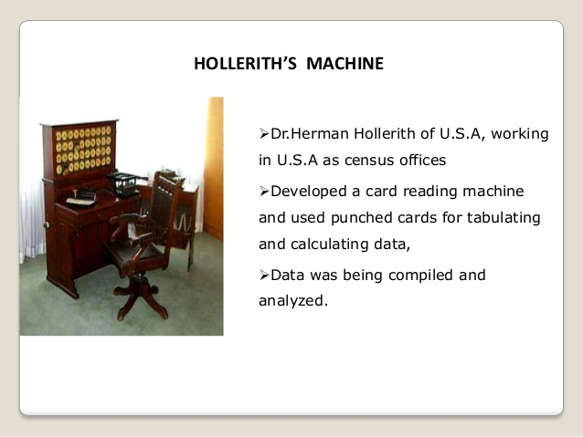
BIRTH OF COMPUTER
Before the 1920s, computers (sometimes computors) were human clerks that performed computations. They were
usually under the lead of a physicist. Many thousands of computers were employed in commerce, government, and
research establishments. Most of these computers were women. Some performed astronomical calculations for
calendars, others ballistic tables for the military.
After the 1920s, the expression computing machine referred to any machine that performed the work of a human
computer, especially those in accordance with effective methods of the Church-Turing thesis. The thesis states
that a mathematical method is effective if it could be set out as a list of instructions able to be followed by
a human clerk with paper and pencil, for as long as necessary, and without ingenuity or insight
 Machines that computed with continuous values became known as the analog kind. They used machinery that
represented continuous numeric quantities, like the angle of a shaft rotation or difference in electrical
potential.
Machines that computed with continuous values became known as the analog kind. They used machinery that
represented continuous numeric quantities, like the angle of a shaft rotation or difference in electrical
potential.
Digital machinery, in contrast to analog, were able to render a state of a numeric value and store each
individual digit. Digital machinery used difference engines or relays before the invention of faster memory
devices.
The phrase computing machine gradually gave way, after the late 1940s, to just computer as the onset of
electronic digital machinery became common. These computers were able to perform the calculations that were
performed by the previous human clerks.
Since the values stored by digital machines were not bound to physical properties like analog devices, a logical
computer, based on digital equipment, was able to do anything that could be described "purely mechanical." The
theoretical Turing Machine, created by Alan Turing, is a hypothetical device theorized in order to study the
properties of such hardware.
Charles Babbage is often regarded as one of the first pioneers of computing. Beginning in the 1810s, Babbage had
a vision of mechanically computing numbers and tables. Putting this into reality, Babbage designed a calculator
to compute numbers up to 8 decimal points long. Continuing with the success of this idea, Babbage worked to
develop a machine that could compute numbers with up to 20 decimal places. By the 1830s, Babbage had devised a
plan to develop a machine that could use punched cards to perform arithmetical operations. The machine would
store numbers in memory units, and there would be a form of sequential control. This means that one operation
would be carried out before another in such a way that the machine would produce an answer and not fail. This
machine was to be known as the �Analytical Engine�, which was the first true representation of what is the
modern computer.
Ada Lovelace (Augusta Ada Byron) is credited as the pioneer of computer programming and is regarded as a
mathematical genius, a result of the mathematically heavy tutoring regimen her mother assigned to her as a young
girl. Lovelace began working with Charles Babbage as an assistant while Babbage was working on his �Analytical
Engine�, the first mechanical computer. During her work with Babbage, Ada Lovelace became the designer of the
first computer algorithm, which had the ability to compute Bernoulli numbers. Moreover, Lovelace�s work with
Babbage resulted in her prediction of future computers to not only perform mathematical calculations, but also
manipulate symbols, mathematical or not. While she was never able to see the results of her work, as the
�Analytical Engine� was not created in her lifetime, her efforts in later years, beginning in the 1940s, did not
go unnoticed.
In 1946, he designed the first high-level programming language, Plankalk�l.
ENIAC, 1946
Regarded as the first general purpose electronic computer, the Electronic Numerical Integrator and Computer
(ENIAC) was initially commissioned for the use in World War II, but not completed until one year after the
war had ended . Installed at the University of Pennsylvania, its 40 separate eight-foot-high racks and
18,000 tubes were intended to help calculate ballistic trajectories.
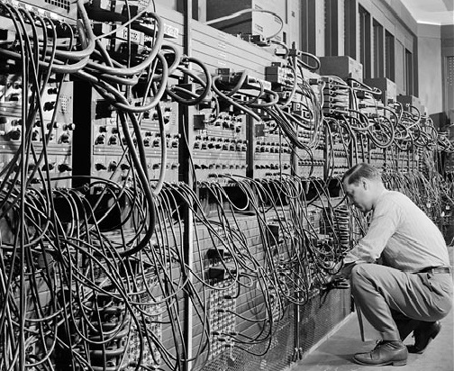

 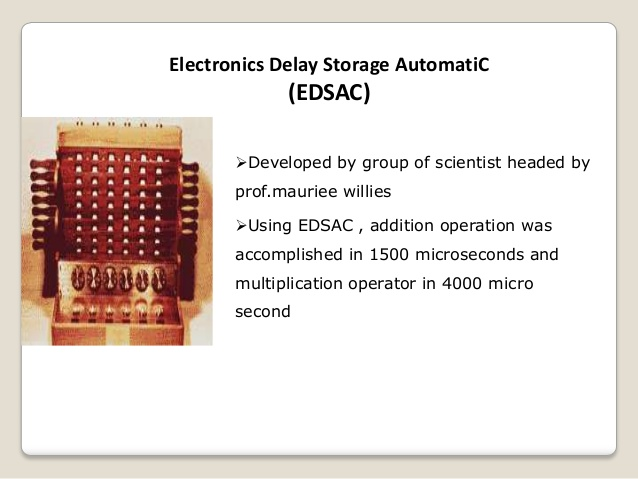
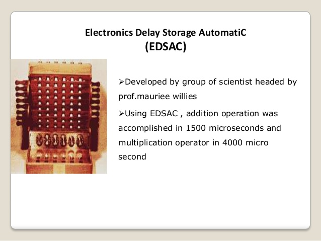
 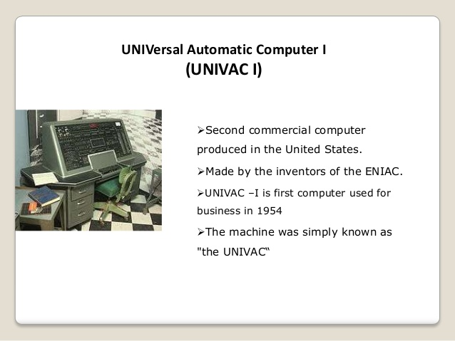
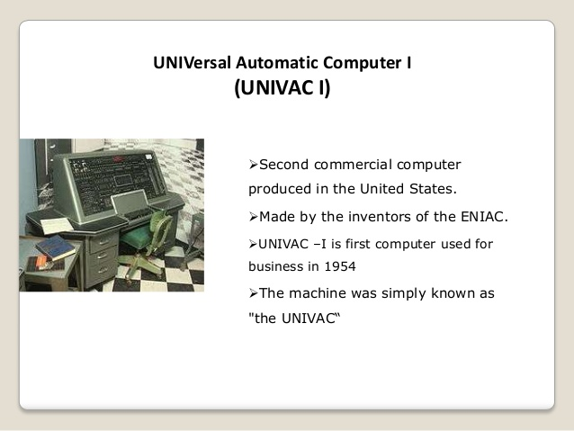
the harwell computer,or WITCH(wolverhampton Insrumet for teaching computing from harwell), was created.the 1951
computer was able to store data and perform basic arithematic.
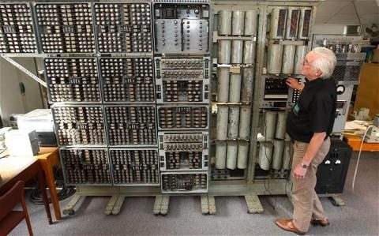
IBM System/360, 1964
Part of a family of interchangeable computers, the IBM System/360 mainframe was the first to cover a complete
range of applications, from small to large, from commercial to scientific. Users were able to enlarge or shrink
their setup without having to make headache-inducing software upgrades as well. Higher-end System/360 models had
roles in NASA's Apollo missions as well as air traffic control systems.
THEN IN THE TIME BEING MANY OTHERS CAME
THEN CAME THE APPLE 1 in 1976 "
 THEN CAME THE APPLE 2 in 1977"
THEN CAME THE APPLE 2 in 1977"
 THEN CAME THE APPLE lisa in 1983"
THEN CAME THE APPLE lisa in 1983"
 THEN CAME THE hp 's 1 TOUCH SCREEN COMPUTER in 1983 WHICH MADE THE WHOLE WORLD MAD"
THEN CAME THE hp 's 1 TOUCH SCREEN COMPUTER in 1983 WHICH MADE THE WHOLE WORLD MAD"
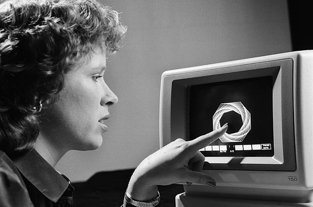
AFTER THAT YOU KNOW WHAT HAPPENED WINDOWS COME UP WITH ITS XP AND THE NEW ERA BEGAN WITH THIS PLATFORM AFTER ITS
EXISTENCE MANY OTHER INVENSIONS ARE MADE AND M ANY MORE TO COME...........................
HOME
BACK